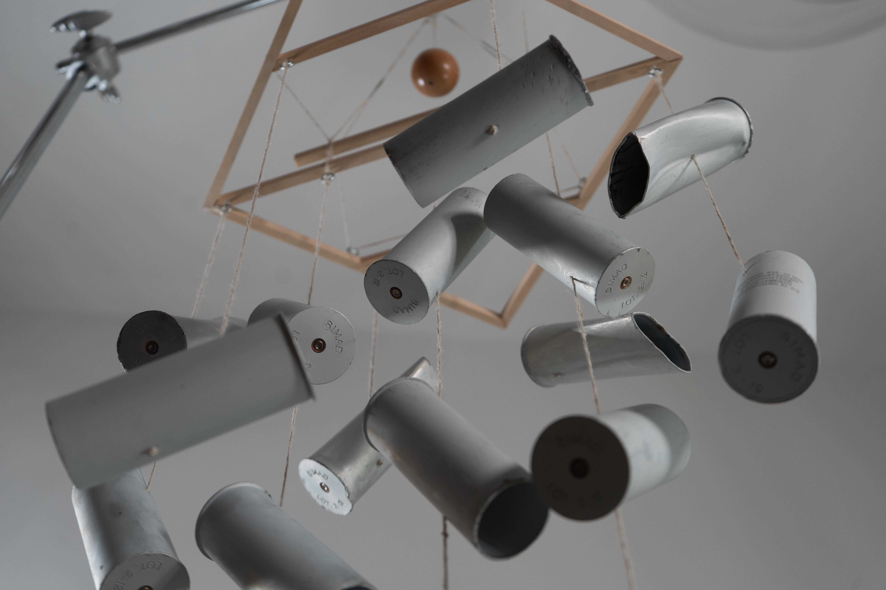
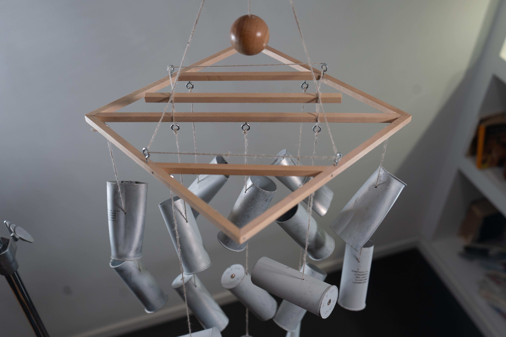
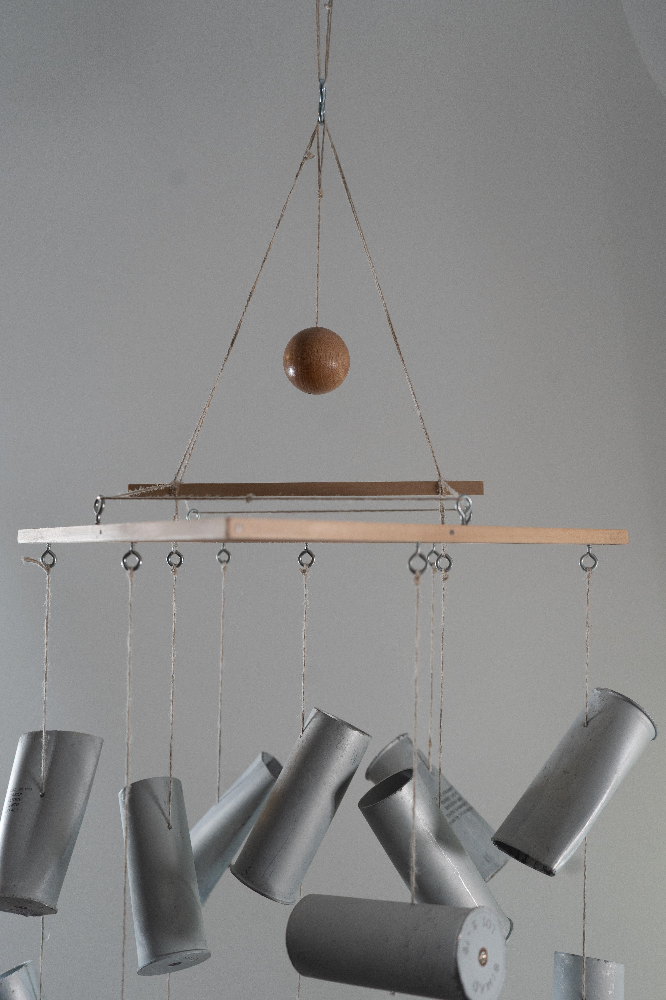
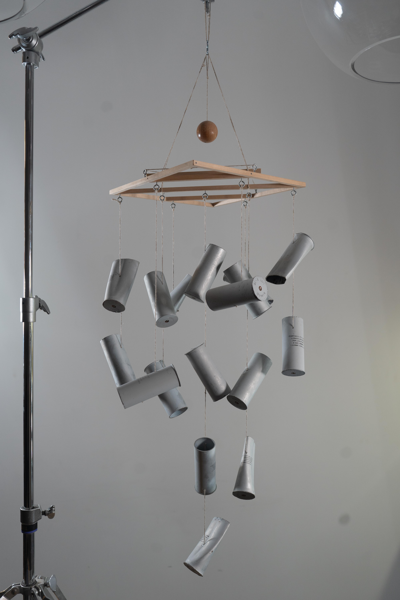
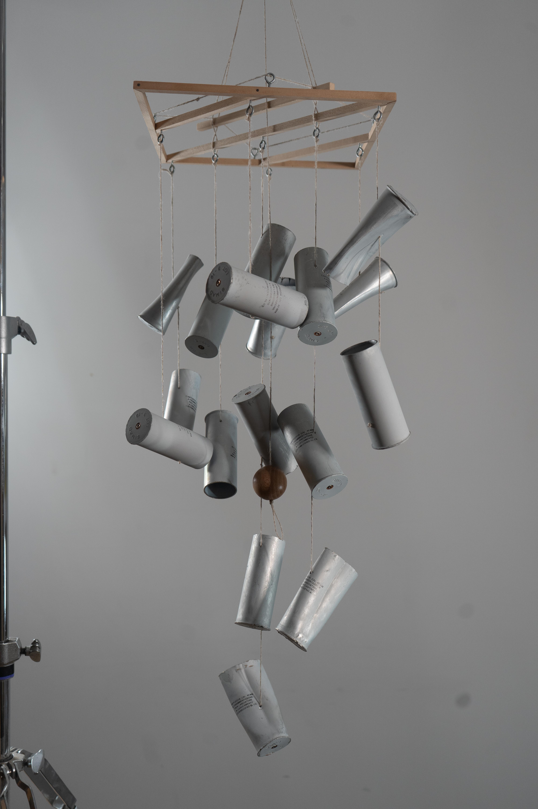
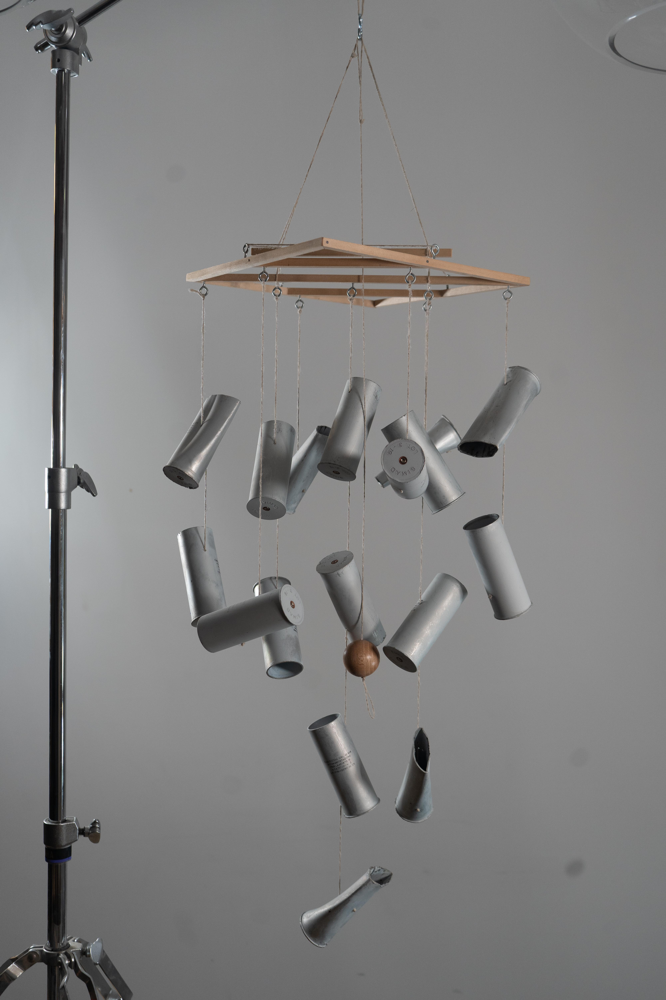
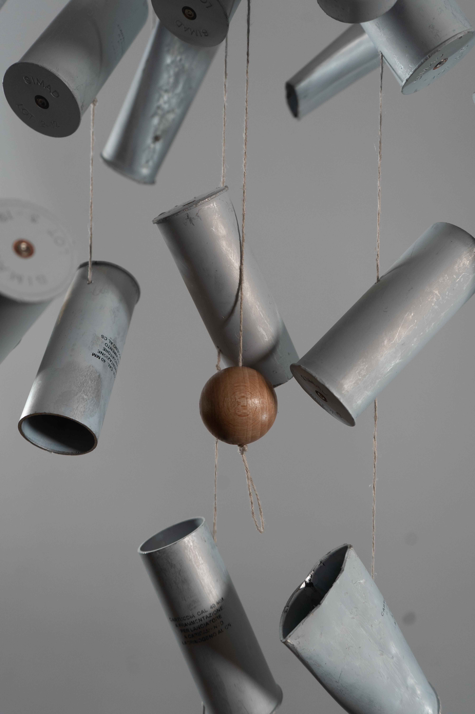
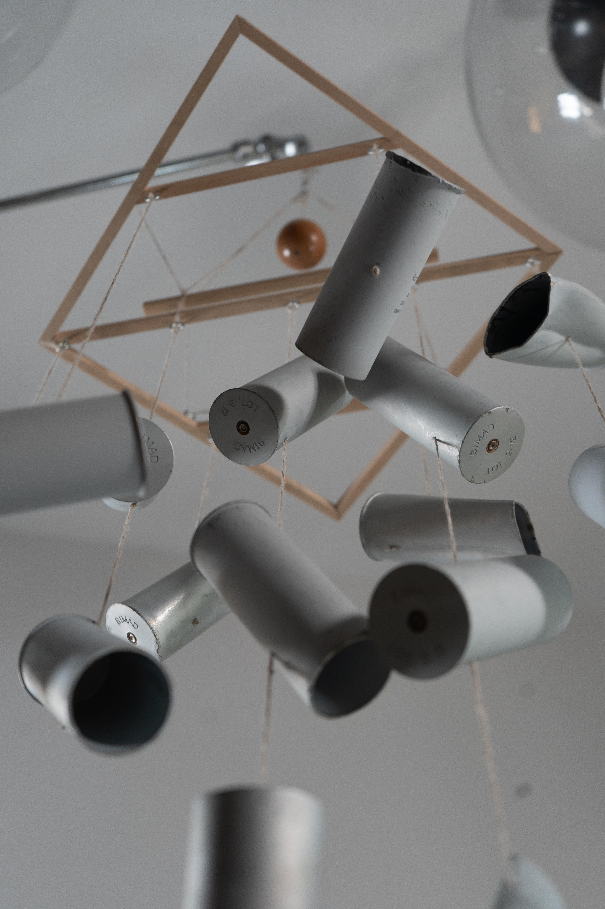
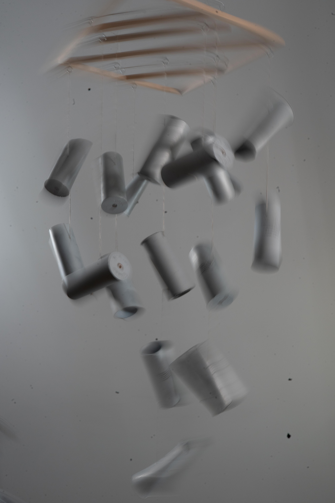
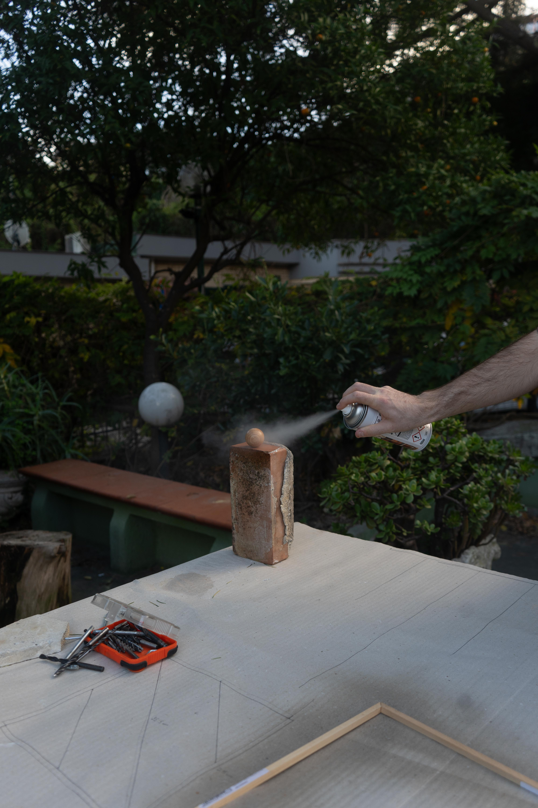

Venti di protesta
Installation
Venti di protesta, Simone Grimaldi (2025).
Venti di protesta — Simone Grimaldi, 2025, is a sound object born from a direct experience of protest and repression. On September 22, 2025, I was near Milano Centrale station during a pro-Palestine demonstration and the clashes that followed between protesters and law enforcement. That day became a significant moment for political activism in Italy, widely perceived as a turning point in the political awareness of younger generations, especially around issues such as Palestine, human rights, and the global rise of increasingly authoritarian forms of government. During the clashes, hundreds of tear gas canisters were fired directly into crowds of unarmed protesters, leaving empty shells scattered across the streets. Despite the burning gas and the tears in their eyes, some protesters picked them up and, during a sit-in in front of the police convoy, transformed them from instruments of repression into instruments of sound. By striking the shells against one another, they created a metallic noise similar to wind chimes, while people continued to dance and protest peacefully. The idea for the work comes directly from that moment. I collected as many shells as I could hold in my hands and brought them home, still covered in traces of tear gas. Sixteen of them were then mounted onto a self-built wooden frame, creating a suspended sound system. When moved by the wind, the shells hit one another and recreate the same sound that, during the protest, had animated the crowd. The work transforms the residue of state violence into a fragile acoustic object: a memorial, a document, and a gesture of resistance. 110 x 27 x 27 cm; wood, hemp string, sixteen 40 mm cartridges — empty tear gas grenade shells used by the Italian State Price.









